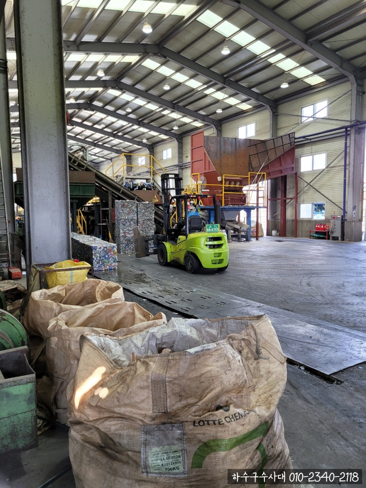
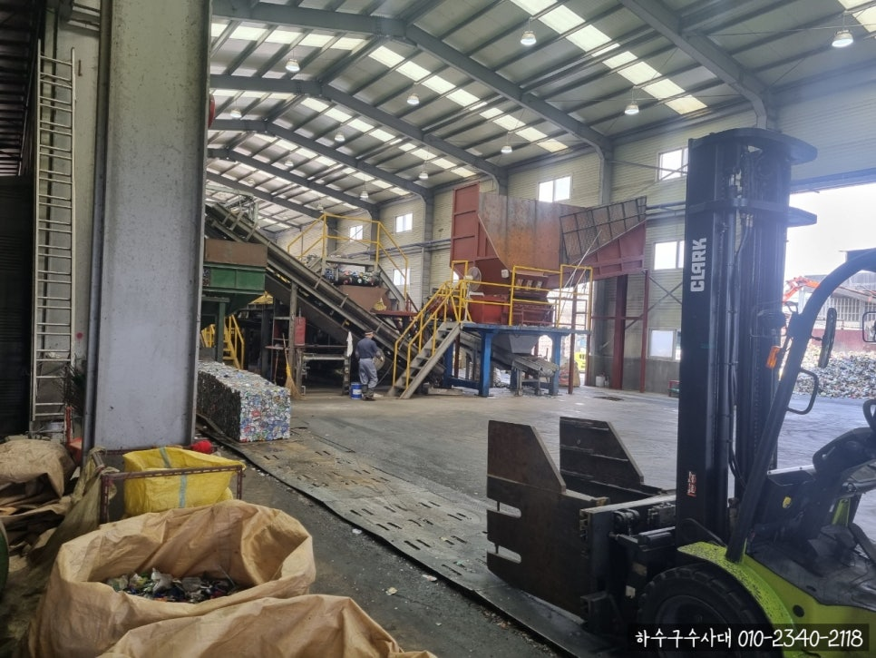
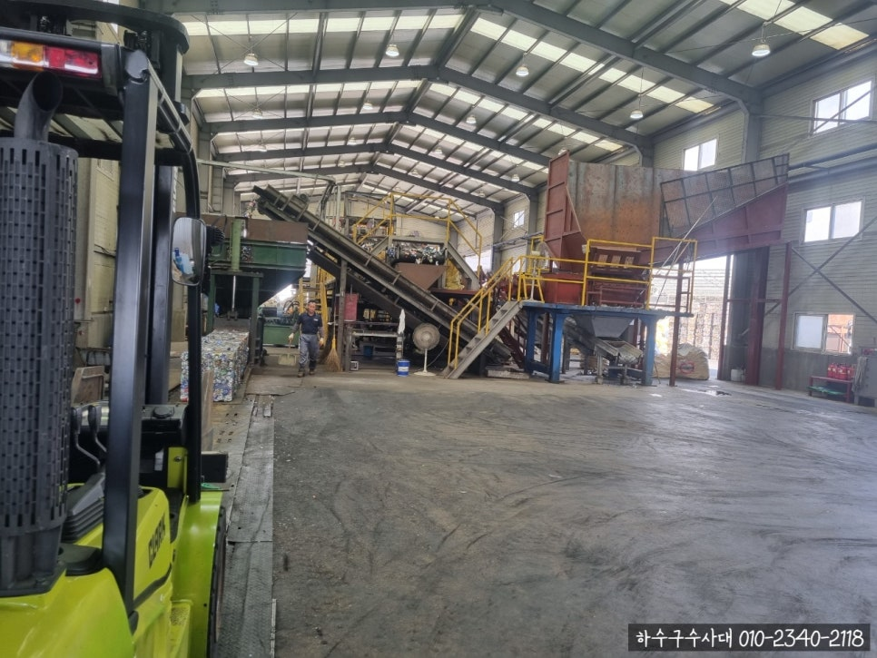
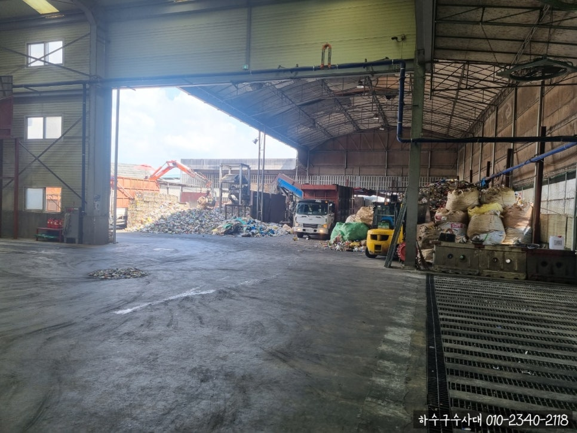
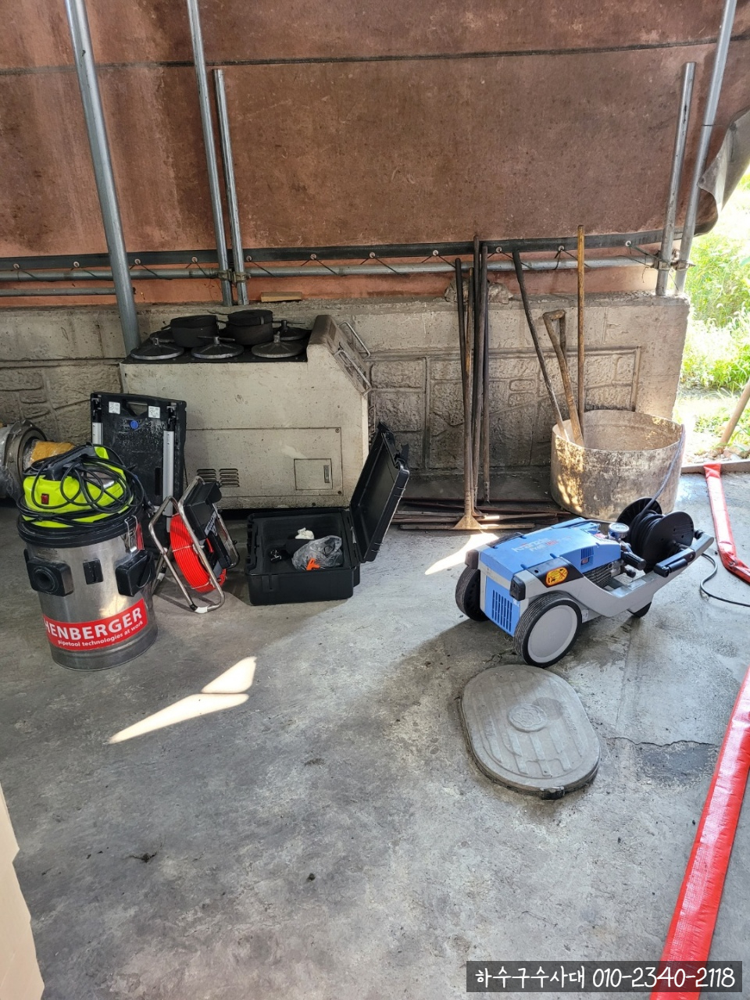
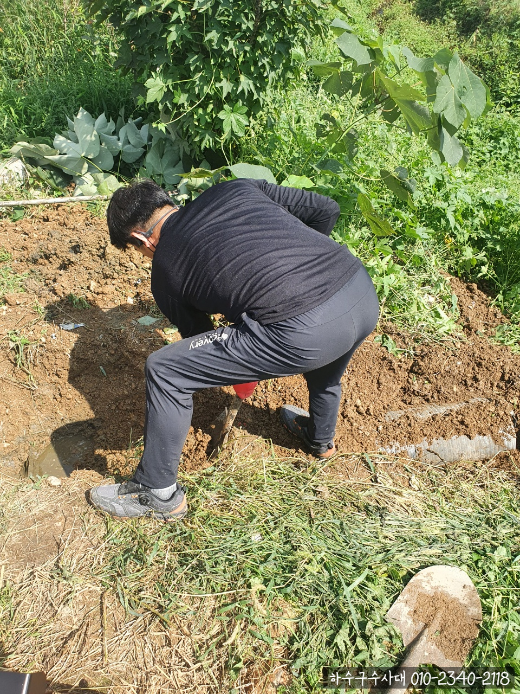

🏠 화성 우수관청소 꼼꼼하게 잘하는 업체
화성 하수구막힘 전문 시공 후기

📋 작업 개요
- 위치: 화성
- 서비스 유형: 하수구막힘, 배관막힘, 역류해결, 뚫는업체, 배관청소, 고압세척
- 작업 일시: 2021. 9. 13. 8:00
- 업체명: 하수구수사대 (010-5615-2118)
🔍 문제 상황
안녕하세요.
화성 우수관청소 전문업체 하수구수사대입니다.
8월내내 장마가 지속되면서 우수관이 막혀서 문의를 주는 분들이 많으셨는데요.
장마 전에 미리 우수관청소를 진행해주신다면
장마철에 역류되는 불상사를 방지할 수 있으니 미리 청소 하시는게 좋은 방법이랍니다.
이번엔 경기 화성 자원재활용센터에서 우수관이 막혀서
물이 배출되지 못하고 고여있다는 연락을 받고
하수구수사대에서 출동했죠~!!
우수관은 평소에 잘 신경쓰지 않는 곳이기 때문에
갑자기 이렇게 물이 배출되지않고 고여있으면 당혹스러워 하시는 분들이 많으시답니다.
이럴 경우 방치하지 말고 확인하는 즉시

🔎 원인 분석
💡 전문가 진단: 정밀 진단 장비를 사용하여 슬러지의 고착 여부를 판명하고 타격/세척 작업을 실시했습니다.
저희 하수구수사대에 연락주시면 신속하게 해결할 수 있도록 도와드리겠습니다.
저희 업체는 다양한 배관 세척장비를 보유하고 있습니다.
우수관의 너비나 작업환경에 따라서 작업장비나 작업방식이 달라집니다.
이번에는 소형고압방식으로 진행했습니다.
작업 전 우수관의 연결된 구조와 위치를 파악하고 진행합니다.
흙 밑에 관이 있기 때문에
삽을 이용해서 파내는 작업을 먼저 진행했습니다.
비가 오지않는 날씨라서 그나마 작업하기가 수월한 편이였습니다.
삽을 파내고 나니 우수관의 모습이 보입니다.
확인을 해보니 나가는 배관 일부분이 무너져서
그 부분을 자르고 배관 안에 있는 이물질을 제거하는 작업을 진행했습니다.

🔧 작업 과정
우수관안에 내시경을 삽입하여 내부 상황을 확인해보았습니다.
확인해보니 각종 흙, 모래 등이 우수관에 들어가면서 엉망이 되어있는 상황이였습니다.
화성 우수관청소 방식은 상황에 따라서 다른데
이번에는 소형고압방식으로 진행하였습니다.
고압세척방식은 타 작업방식에 비해 가격대가 높은 편인데
무조건 이 방식을 권해드리지 않구요.
물이 바닥에 흘러나오기 때문에 식당, 주방, 욕실이나 외부에서는 작업가능합니다.
우수관 뚫음을 위해서 고압세척 호스를 연결 후 고압세척방식으로 진행해드렸는데
일부 방수층의 문제나 다른 문제가 있을 경우에는 그에 알맞은 방법으로 진행해드립니다.
오수관 사이로 돌과 시멘트 시멘트가 들어가있어서 경화되는 현상이 발생하였는데
막혀있는 부분은 건져올리고 소형고압방식으로 깔끔하게 세척하는 방식으로 진행되었습니다.
화성 우수관청소 비포에프터 사진입니다.
작업 진행 전 사진과 비교하니 확실히 말끔해진 것이 눈으로 느껴지시죠+_+
흙, 모래로 뒤덮여져있었는데
이제는 물이 잘 흘러가는 모습을 볼 수 있답니다.
작업 완료 후 고객님께 작업 결과물 보여드리고
마무리 한답니다.


✅ 작업 완료
고객님께 신뢰하실 수 있도록 저희도 최선을 다해서 작업하도록 하겠습니다!
우수관 막혀서 말썽이거나
서울,경기, 인천, 화성 우수관청소 꼼꼼하게 잘하는 업체
필요하신 분들 하수구업체에 문의주세요^_^
하수구 수사대: 010-2340-2118




⚠️ 하수구 배관 막힘 예방 및 관리 가이드
- ✅ 머리카락, 비닐, 물티슈 등 물에 분해되지 않는 이물질은 하수구 유입을 절대 금지해 주세요.
- ✅ 하수구 거름망을 씌우고 모여진 이물질은 주기적으로 쓰레기통에 바로 비워주셔야 합니다.
- ✅ 배관 노후가 심할 경우 이물질이 더 쉽게 걸리므로 주기적인 배관 세척(고압세척 등)을 권장합니다.
- ✅ 작업 후 1년 이내 재발 시 하수구수사대에서 무상 A/S 보증 서비스를 제공합니다.
💡 핵심 정리
- 확실한 장비 작업(내시경 점검 및 샤프트 스케일링)으로 원인을 뿌리 뽑습니다.
- 작업 후 1년 이내에 동일한 부위 재발 시 100% 무상 A/S 서비스를 보장합니다.
- 서울 · 경기 · 인천 전 지역에 24시간 언제든 긴급 출동할 수 있도록 항시 대기 중입니다.
❓ 자주 묻는 질문 (FAQ)
🚨 화성 하수구막힘 문제로 고민이신가요?
정확한 원인 진단과 확실한 시공으로 재발 없는 해결을 약속드립니다.
24시간 긴급 출동 | 서울 · 경기 · 인천 전지역 | 1년 내 재발 시 무상 A/S